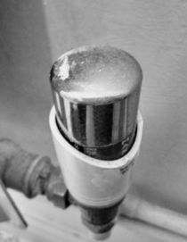

Radiator Cap
What and Why
A brief evaluation
With the advent of centralised heating it became more and more urgent the need to create heating systems that not only covered a building but individual rooms. Previously reliant on fireplaces houses had a main source of heat in one room which intensity could only be regulated by the intensity of the fire and the amount of coal or wood added to it.
The system then changed to fire stoves in separate rooms of the house and the has developed ever since. The simplest thing that you can find in modern houses are radiators and most of them have a self-regulatory system. That self-regulatory system is independent from the main service. The cap that is covering the main handle to control the radiator itself making at times hard to function if missing. The design of the object is simple and provides as cover for the harder to use metal rig. If the cap is missing though most of the time it is difficult to regulate the device individually.
Original Post found on Agnes A Blog